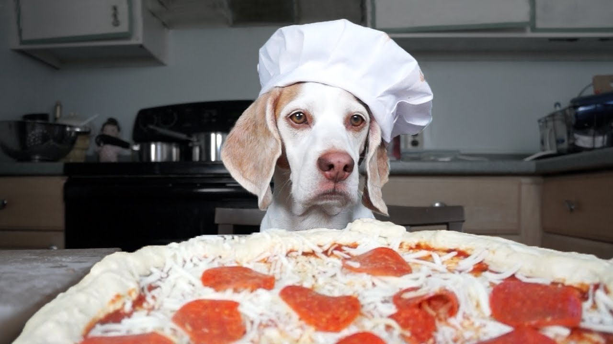
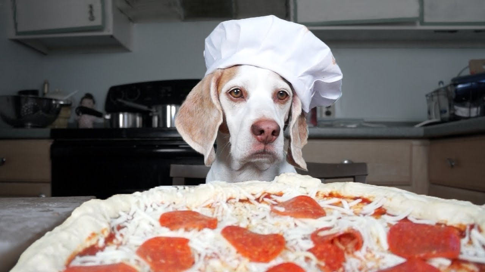

My name is Rachel Richardson, and I have absolutely loved pizza ever since I was old enough to eat it. Every time I travel, I make an effort to try a slice of pizza from at least one restaurant in that area. I haven't yet ventured to most of the United States, I have also solicited pizza reviews from my closest friends. Each pizza is ranked on a scale of 1-5, based on overall taste, quality of the dough, and quality of the crust. Finally, since the only thing better than eating pizza is watching cute puppies devour it, I've included some of my favorite images below.
 



If you want to see more puppies eating pizza, this site has many cute pictures with hilarious captions.